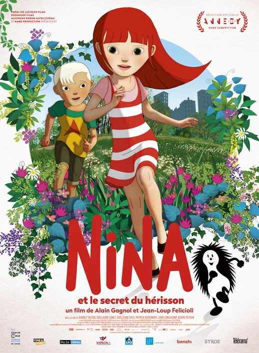
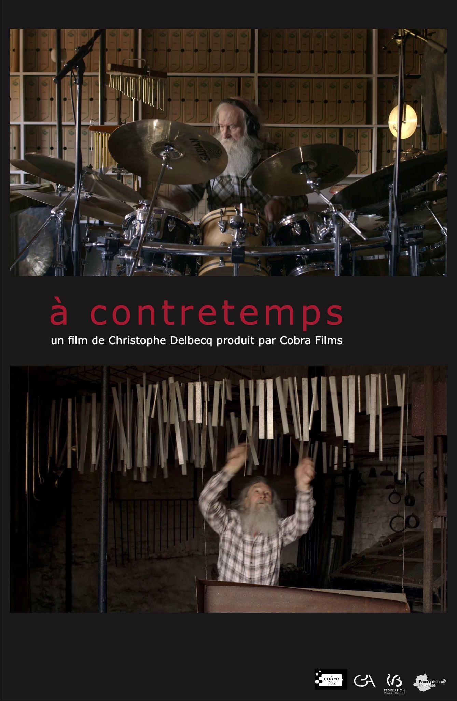
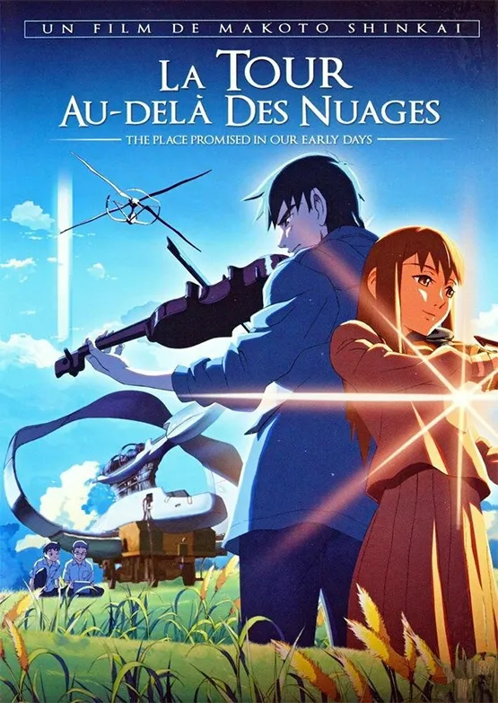
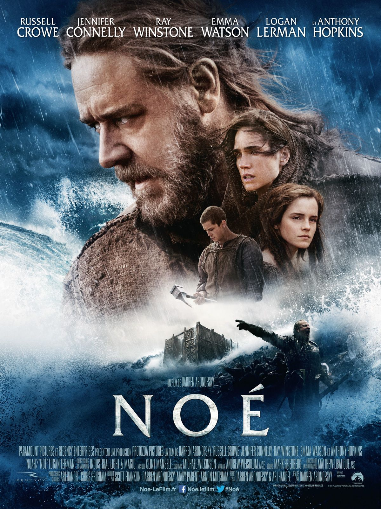
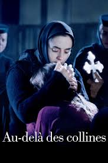
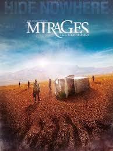
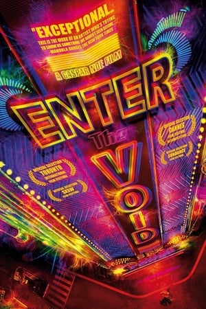
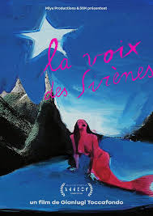
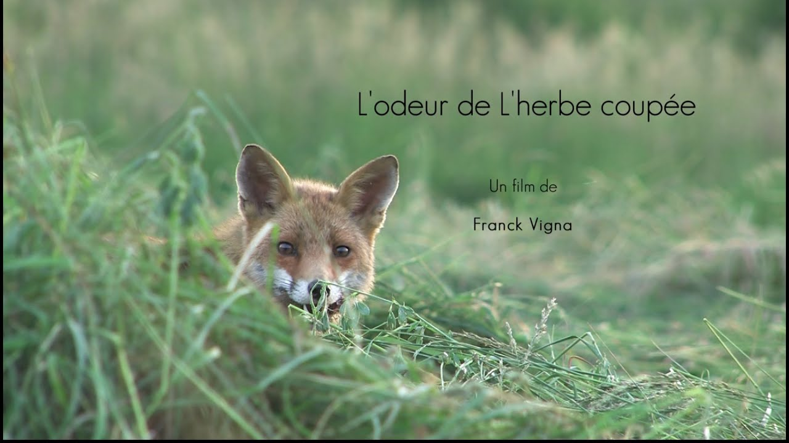

Films d'auteurs diffusés du 1er au 10 juillet, de 18h à minuit
Venez vivre le cinéma autrement, sous les étoiles, avec une sélection de films d’auteur projetés en plein air, dans une ambiance conviviale et ouverte à toutes et à tous.
Gratuit mais réservation obligatoire
Notre équipe met à jour régulièrement les actualités : restez connecté·e pour les infos pratiques, changements de dernière minute et surprises du festival. Consultez la programmation complète pour explorer tous les films au programme.
A partager ensemble sans modération
Rendez-vous au Parc de la Butte par l'entrée principale – Fontaine du Chapeau Rouge, 5 avenue Debidour, 75019 Paris
Les films à l’affiche
L’Odeur de l’herbe coupée (France)
Synopsis :Un adolescent découvre les secrets d’un vieux jardin abandonné au début de l’été. Porté par une mise en scène sensorielle, ce film explore avec délicatesse le passage à l’âge adulte, les souvenirs enfouis et la beauté fragile du quotidien.
Et Le Monde Bascule (Canada)
Synopsis :Dans un village isolé du Grand Nord, une communauté inuit tente de préserver ses traditions face à la modernité et au dérèglement climatique. Un regard sincère et lumineux sur l’adaptation, la mémoire collective et la résilience culturelle.
Nina et le secret du herisson (Espagne)
Synopsis :Chaque nuit, Nina s’échappe en douce pour observer les lucioles dans la forêt près de chez elle. Un soir, elle y fait une rencontre inattendue qui va bouleverser sa perception du monde. Un conte tendre et magique sur l’imaginaire et la liberté.

À Contre-temps (Belgique)
Synopsis :Un vieux pianiste solitaire croise la route d’un jeune danseur dans une salle de répétition désaffectée. De cette rencontre improbable naît une complicité artistique et humaine. Une ode silencieuse à la transmission, au rythme et à l’écoute.

La Tour au-delà des Nuages (Japon)
Synopsis :Dans un petit camion aménagé, une cuisinière parcourt les routes du Japon rural pour cuisiner chez des inconnus. Chaque étape devient l’occasion de partager souvenirs, silences et recettes. Un film délicat sur la nourriture comme lien invisible entre les êtres.

Noé (France)
Synopsis :Le jeune Noé voit un jour son père, issu de la lignée de Seth, assassiné sous ses yeux par les descendants de celle de Caïn, des êtres vils qui ont corrompu le monde façonné par le Créateur. Devenu adulte et à son tour père de famille, Noé reçoit un message de Dieu lui prédisant l'Apocalypse. Un déluge va s'abattre sur la Terre dans le but d'éradiquer la méchanceté du monde.

Au-delà des collines (Roumanie)
Synopsis :Alina revient d'Allemagne pour y emmener Voichita, la seule personne qu'elle ait jamais aimée et qui l'ait jamais aimée. Mais Voichita a rencontré Dieu et en amour, il est bien difficile d'avoir Dieu comme rival.

Mirages (Tunisie)
Synopsis :Cinq candidats très différents se disputent un poste prestigieux chez Matsuika. Une dernière épreuve mystérieuse dans un lieu secret : minibus sans vitres, accident, désert, disparition du chauffeur. Entre hallucinations et peurs intimes, ils errent, hésitent — est‑ce encore un jeu ?

Enter the Void (Angleterre)
Oscar et sa sœur Linda habitent depuis peu à Tokyo. Oscar survit de petits deals de drogue alors que Linda est stripteaseuse dans une boite de nuit. Un soir, lors d'une descente de police, Oscar est touché par une balle.

La voix des sirènes (Italie)
Synopsis :Au coeur des fonds marins, des algues primitives ondulent, bercées par le son feutré et vrombissant des courants. Là-haut, à la surface de l’eau, quelque chose d’extraordinaire vient d’apparaître : une voix. Si douce et séduisante qu’elle ne ressemble à rien de ce qu’on a entendu auparavant.

Une Place au Soleil (Suède)
Synopsis :Un vieil homme quitte sa maison de retraite sans prévenir, décidé à retrouver l’endroit où il a vu son tout premier lever de soleil. Un road movie minimaliste, tendre et un peu absurde, sur la mémoire, le temps qui passe et la joie simple d’aller quelque part.
Retrouvez d'un seul coup d'oeil toute la programmation du Festival :
Projection de 11 films sur 4 jours
10 films seront projetés pour votre plus grand plaisir, de 18h à minuit !4 jours de projection à raison de 3 films par jour, aux mêmes horaires : le premier film à 18h, le deuxième film à 20h et le troisième à 22h durant deux jours.
Le Parc de la butte fermant exceptionnellement ses grilles à MINUIT à l'occasion de cet événement unique !
| Date | Séance | Film | Synopsis |
|---|---|---|---|
| 01 juillet | 18h | L’Odeur de l’herbe coupée |  |
| 20h | Et Le Monde Bascule | ||
| 02 juillet | 20h | Nina et le secret du herisson | |
| 22h | À Contre-temps | ||
| 03 juillet | 20h | La Tour au-delà des Nuages | |
| 04 juillet | 18h | Noé | |
| 22h | Au-delà des collines | ||
| 06 juillet | 20h | Mirages | |
| 07 juillet | 18h | Enter the Void | |
| 10 juillet | 20h | La voix des sirènes | |
| 22h | Une Place au Soleil | |
Dernières news, communiqués, articles parus dans les médias...
On parle de nous !
"Prévisions météo : les projections sont maintenues en extérieur.
L’équipe du film Mirages sera présente pour un échange après la projection.
Un vent de fraîcheur sur le cinéma d’auteur. Une initiative précieuse, conviviale et exigeante, à découvrir absolument cet été.
— CinéMag, le magazine de référence du 7e art—
Qui sommes-nous ?
Créée en février 2025, l’association Les Films de Plein Air est née d’une envie simple mais forte : partager le cinéma d’auteur avec le plus grand nombre, dans un cadre accessible et convivial.
Créee par Jennifer EDWARDS, l’ambition de l’association est de proposer des projections en plein air, dans des lieux vivants et partagés, pour faire (re)découvrir des œuvres singulières, sensibles et parfois méconnues. À travers une programmation exigeante mais toujours tout public, nous souhaitons créer des ponts entre les spectateurs et les films, entre l’intime et le collectif.
Chaque séance est pensée comme une expérience à part entière : introduction au film, échanges, parfois rencontres avec les équipes… et toujours ce plaisir d’être ensemble sous les étoiles.
"Les Films de Plein Air", c’est donc :
Une jeune association portée par la passion du cinéma
Un projet de diffusion gratuite et ouverte à tous
Un événement annuel qui fait du 7e art un moment de lien, de découverte et de partage
Bienvenue à celles et ceux qui aiment voir autrement, ailleurs et ensemble.